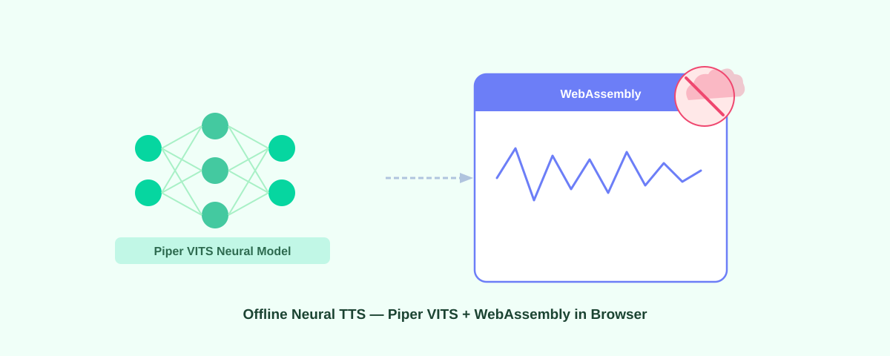

How Piper VITS and WebAssembly power offline neural TTS in your browser

Your text shouldn't have to leave your device to be read aloud. Most browser TTS no cloud solutions either sound robotic or send every word you highlight to a remote server. Voice Reader takes a different approach: it runs Piper VITS through WebAssembly directly in Chrome, so speech synthesis happens on your CPU, not someone else's.
What Piper is
Piper is an open-source neural TTS engine built on VITS (Variational Inference Text-to-Speech), maintained by the Rhasspy project under an MIT license. VITS generates speech end-to-end from text in a single pass, rather than splicing together pre-recorded phonemes the way older engines do. The result is natural intonation and rhythm that concatenative systems can't match.
Each Piper voice ships as a single ONNX model file. Medium-quality English voices weigh around 63 MB. That's small enough to cache in a browser but large enough to produce speech that doesn't sound like a 2005 GPS. The code is auditable, no hidden data collection anywhere in the pipeline, which is why it fits well in a free offline TTS extension with no account required.
WebAssembly: how Piper runs in a browser
Piper's inference engine is C++. To run it in Chrome without a native binary, we compile it to WebAssembly using ONNX Runtime WASM. The browser executes this bytecode at near-native speed, fast enough for real-time synthesis on any modern laptop or desktop.
Three practical things follow from this. First, there are no network calls during synthesis, so your text never reaches a server. Second, the extension works on planes, in basements, anywhere without signal, once the model is cached. Third, the same WASM binary runs on Chrome, Edge, Brave, Opera, and Firefox without any platform-specific changes.
Voice Reader runs the Piper WASM engine inside a Manifest V3 offscreen document, which keeps synthesis off the main thread so the browser stays responsive while audio is generated.
How Voice Reader uses Piper + WASM
- Select text on any webpage and right-click → Read.
- Choose an engine mode: Auto (Piper with fallback), Neural (Piper only), or System (Web Speech API).
- On first use, the selected Piper voice model downloads from HuggingFace and gets stored in your browser's Origin Private File System (OPFS), a sandboxed local storage area the extension can access without any cloud sync.
- Piper's WASM engine synthesizes speech from your text on-device.
- Audio plays through your speakers. The floating bar lets you pause, skip, or adjust speed.
- Every read after that first download runs fully offline. No requests leave the browser.
First-run download and caching
The initial download of a medium-quality Piper voice takes 30 seconds to 2 minutes depending on connection speed. The ~63 MB ONNX model file goes into OPFS and stays there until you clear extension data. No HuggingFace account is needed. Once cached, the voice loads from local storage in under a second.
If you switch to a different voice ID, that voice downloads once on first use, then caches the same way. Most browsers allocate at least 50 GB of OPFS quota, so storing several voices isn't a problem in practice.
Engine modes and fallback behavior
Auto (default)
Tries Piper first. If the ONNX model fails to load or WebAssembly isn't supported, falls back to the system's Web Speech API voices. Good for most users who want the best available voice without thinking about it.
Neural (Piper only)
Always uses Piper. If the model can't load, you see an error rather than a silent fallback. Use this mode when you need consistent voice output and don't want the system voices substituting in.
System (Web Speech API)
Uses your browser's built-in voices. No model download, no WASM overhead, instant playback. The tradeoff is voice quality and the fact that some system voices do phone home depending on your OS. Details in our guide on how to make Chrome read text out loud.
Switching voices and models
Voice Reader ships with dozens of Piper voices across English (20+ IDs covering different accents and genders), Spanish, French, German, Italian, Portuguese, and more. Quality tiers run from 16 MB low to 63-75 MB medium to 120+ MB high. To switch:
- Click the Voice Reader icon → Options.
- Set Engine to Neural (Piper).
- Pick a voice ID from the Neural voice dropdown.
- Save. The new voice downloads on next use.
Comparison: Piper vs. cloud TTS vs. system voices
| Aspect | Piper (WASM) | Cloud TTS | System voices |
|---|---|---|---|
| Quality | High (neural VITS) | Very high (premium) | Medium (pre-recorded) |
| Offline | Yes (after download) | No | Yes |
| Cost | Free | $0.003-0.02 per 1K chars | Free |
| Privacy | Local only | Text sent to server | Local only (usually) |
| Voice variety | 100+ voices | 500+ voices | Depends on OS |
| Setup | Install extension, download model once | API key + payment method | Install extension, instant |
Why this matters for accessibility
Users with dyslexia, low vision, or reading fatigue need reliable read-aloud support, not a tool that breaks when there's no wifi or stops working after a free-tier limit. Piper running offline through WebAssembly means the voice is always available, sounds natural, and never processes your text on a third-party server. That's the case made for read-aloud support for dyslexia and reading difficulties that also respects privacy.
Performance and browser support
Chrome, Edge, Brave, and Opera all support WebAssembly + OPFS fully. Firefox works. Safari has partial OPFS support from iOS/macOS 17.4 onward. On the hardware side, expect the WASM engine to synthesize roughly 1-2 seconds of audio per second of real time on a modern multi-core CPU, with about 200-300 MB RAM used while a model is loaded.
Known limitations
- Piper requires the full text block before it starts generating; streaming synthesis sentence-by-sentence is not yet implemented.
- Prosody control (adjusting emphasis or emotional tone) is limited compared to cloud providers; the System mode gives you finer pitch and rate control through Web Speech API.
- The 63 MB model size is manageable on desktop but can feel heavy on lower-storage devices.
Getting started
- Install Voice Reader as an unpacked extension.
- Open extension options, set Engine to Neural (Piper), pick a voice.
- Select text on any page and right-click → Read.
- Wait 30-120 seconds for the first voice download. Every read after that is instant and offline.
No account. No subscription. No data collection. The text stays on your device from the moment you highlight it to the moment you hear it.
FAQ
What is Piper TTS?
Piper is an open-source neural TTS engine built on VITS. It generates speech on-device without cloud processing. The Rhasspy project maintains it under an MIT license.
Does Piper TTS work offline?
Yes. After one download (30 seconds to 2 minutes), it runs entirely through WebAssembly on your device. No internet needed for any subsequent read.
How much data does Piper TTS send to the cloud?
Zero. Text and audio never leave the browser. The only network call is the one-time model download from HuggingFace.
How do I switch Piper voices?
Open Voice Reader options, select Neural (Piper) as the engine, choose a voice ID, and save. The new voice downloads on next use.
Can I use Piper on mobile?
Voice Reader is a Chrome extension for desktop (Windows, Mac, Linux). Chrome extensions don't run on mobile Chrome.
Is Piper better than my browser's built-in voices?
For most system voices, yes: Piper's VITS model produces better prosody and more natural rhythm. If you want zero setup time and don't care about voice quality, System mode is faster to start. Auto mode gives you Piper when the model is cached and falls back to system voices if it isn't.